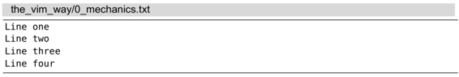
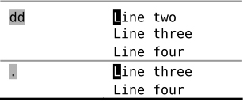

），这听起来没什么特别，但在这个简单的说明里，我们会发现让Vim区分模式的编辑模型如此高效的核心原因。首先我们要问：“究竟什么是修改？”
），这听起来没什么特别，但在这个简单的说明里，我们会发现让Vim区分模式的编辑模型如此高效的核心原因。首先我们要问：“究竟什么是修改？”技巧1结识 . 命令
. 命令可以让我们重复上次的修改，它是Vim中最为强大的多面手。
Vim文档只是简单地提到 . 命令会“重复上次修改”（参见 :h .），这听起来没什么特别，但在这个简单的说明里，我们会发现让Vim区分模式的编辑模型如此高效的核心原因。首先我们要问：“究竟什么是修改？”
要理解 . 命令的强大，我们需要意识到这一点：“上次修改”可以指很多东西，一次修改的单位可以是字符、整行，甚至是整个文件。
我们将使用下面这段文本进行说明：

x 命令会删除光标下的字符，在这种情况下使用 . 命令“重复上次修改”时，就会让Vim删除光标下的字符：
我们可以输入几次 u 撤销上述修改，使文档恢复到初始状态。
dd 命令也做删除操作，但它会把整行一起删掉。如果在dd后使用 . 命令，那么“重复上次修改”会让Vim删除当前行：

最后，>G 命令会增加从当前行到文档末尾处的缩进层级。如果我们在此命令后使用 . 命令，那么“重复上次修改”会让Vim增加从当前行到文档末尾的缩进层级。在下例中，我们让光标从第二行开始，以便一目了然地看出差别。
x、dd 以及 > 命令都是在普通模式中执行的命令，不过，每次我们进入插入模式时，也会形成一次修改。从进入插入模式的那一刻起（例如，输入 i），直到返回普通模式时为止（输入<Esc>），Vim会记录每一个按键操作。做出这样一个修改后再用 . 命令的话，它将会重新执行所有这些按键操作（参见技巧8中的“在插入模式中移动光标会重置修改状态”部分中的补充说明）。
.命令是一个微型的宏
在后面的第11章“宏”中，我们将看到Vim可以录制任意数目的按键操作，然后在以后重复执行它们。这让我们可以把最常重复的工作流程录制下来，并用一个按键重放它们。我们可以把 . 命令当成一个很小的宏（macro）。
我们将在本章看到一些关于 . 命令的应用，另外我们还将在技巧9及技巧23中学到 . 命令的一些最佳应用技巧。